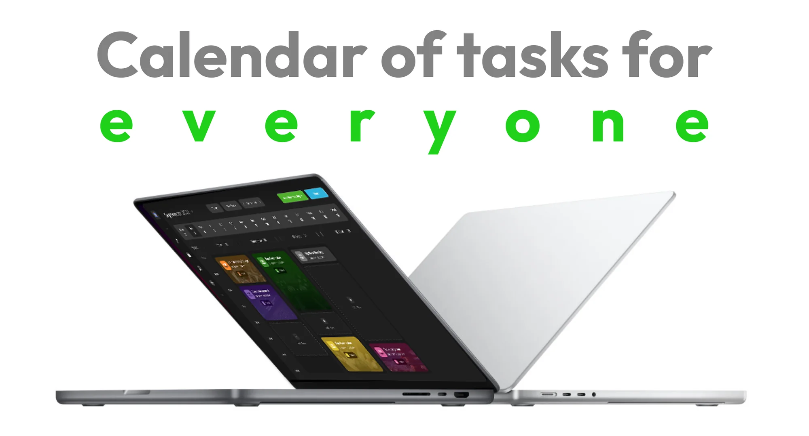
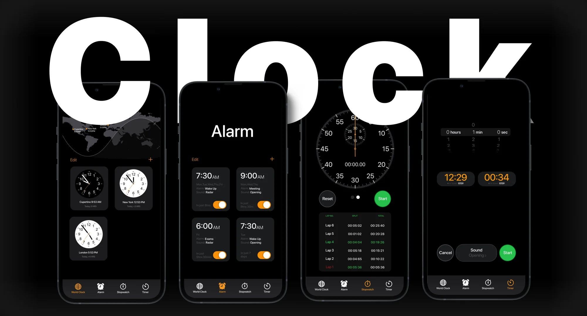
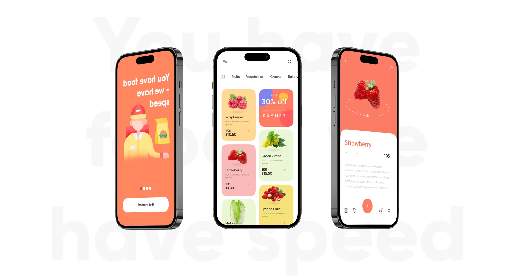
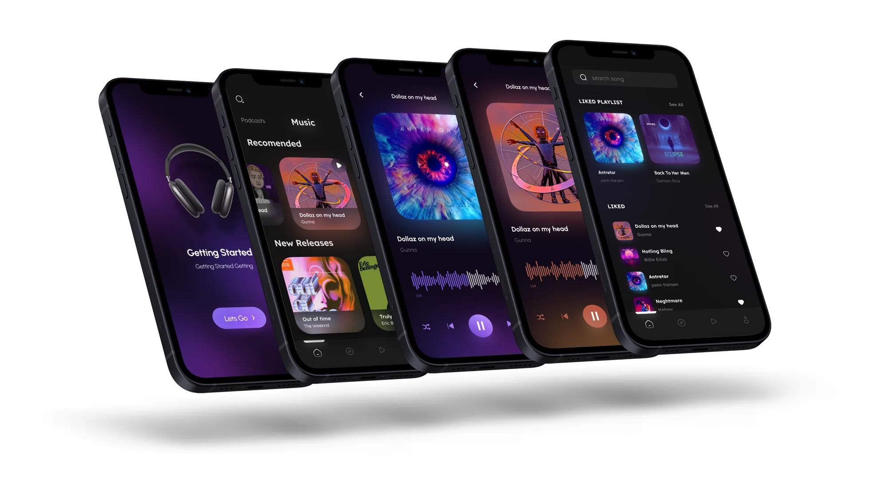
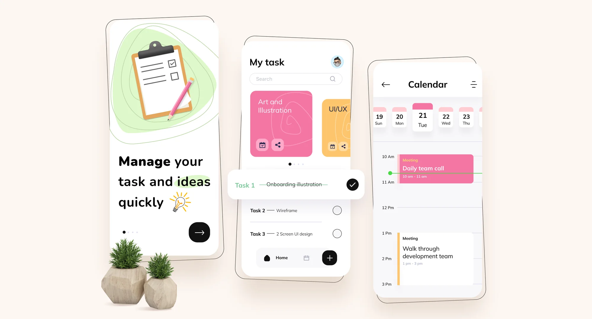

NEOLINE
Дизайн-система с нуля
Собрал дизайн-систему с нуля (60+ компонентов, токены, гайдлайн) — сборка нового экрана сократилась с 4 часов до 1 часа, число несогласованных состояний в интерфейсе упало до нуля.
Продуктовый дизайнер. Проектирую мобильные приложения, веб-продукты
и интерфейсы физических устройств. Создаю дизайн-системы, упрощаю сложные
пользовательские сценарии и сопровождаю продукт
от UX Research до handoff.
NEOLINE
Собрал дизайн-систему с нуля (60+ компонентов, токены, гайдлайн) — сборка нового экрана сократилась с 4 часов до 1 часа, число несогласованных состояний в интерфейсе упало до нуля.
NEOLINE
Документировал логику и правила интерфейса. Новые участники команды быстрее погружаются в продукт и работают самостоятельно.
NEOLINE
Переработал 5 ключевых сценариев: путь до целевого действия сократился с 7 до 4 шагов. В usability-тестах сценарий проходили без подсказок 5 из 6 участников против 2 из 6 до правок.
NEOLINE
Спроектировал мобильное приложение для работы с видео (просмотр, импорт, экспорт): 20+ экранов от user flow до финального UI с учётом Human Interface Guidelines.
NEOLINE
Участвовал в создании бренда с нуля: разработал логотип, визуальную айдентику и адаптировал материалы для продукта и маркетинга.
КОУМВИЗ
Разрабатывал мобильное приложение маркетплейса мебели с AR на SwiftUI: проектировал пользовательские сценарии, реализовывал интерфейсы для 80+ экранов.
ФРИЛАНС
Вёл полный цикл: UX research, конкурентный анализ, wireframes, user flows, интерактивные прототипы, финальный UI, передача в разработку.
NEOLINE
[НУЖНО] Развёрнутый текст оверлея для карточки «Дизайн-система интерфейса».
NEOLINE
[НУЖНО] Развёрнутый текст оверлея для карточки «В разработке».

Малый бизнесTask Management Ultra. Интерфейс системы управления задачами и рабочими процессами. Предполагает работу с задачами, приоритетами и командной организацией.
Read the story — проект Task Management Ultra на Behance, откроется в новой вкладке
РедизайнApple Clock. Концептуальный редизайн стандартного приложения «Часы» от Apple с акцентом на переосмысление существующего интерфейса.
Read the story — проект Apple Clock на Behance, откроется в новой вкладке
Малый бизнесFood Delivery. Концепция приложения для заказа и доставки еды. Основные сценарии связаны с выбором блюд, оформлением заказа и доставкой.
Read the story — проект Food Delivery на Behance, откроется в новой вкладке
Малый бизнесMusic Player App. Концепция мобильного музыкального плеера с экранами воспроизведения и управления музыкой.
Read the story — проект Music Player App на Behance, откроется в новой вкладке
Малый бизнесTask Manager App. Более компактная концепция приложения для личного управления задачами.
Read the story — проект Task Manager App на Behance, откроется в новой вкладке01 / путь
Считаю шаги до цели и убираю те, что существуют ради интерфейса, а не ради человека.
02 / скорость
Компоненты и документация нужны ради часа, который экономит команда.
03 / метрики
Решение живёт до тех пор, пока подтверждается данными.
С вопроса, что считаем успехом. Если ответа нет, формулирую сам и иду с ним к тому, кто ставил задачу: какая метрика или какое поведение должно измениться. Без этого макет обсуждают по вкусу. Потом смотрю, как задачу решают сейчас: аналитика, обращения в поддержку, разговоры с теми, кто пользуется этим каждый день. Обычно на четвёртом разговоре начинаешь слышать одно и то же, там и можно останавливаться.
Формулирую гипотезу так, чтобы её можно было опровергнуть, и ищу самый дешёвый способ проверки. Часто это пять коридорных тестов за день. Исследование они не заменяют, но грубые ошибки ловят до того, как в них вложится разработка.
Считаю стоимость ошибки. При сопоставимом результате беру тот, который проще откатить и дешевле поддерживать через полгода: меньше состояний, меньше исключений в коде. Если разница важна для бизнеса, приношу оба и показываю, чем платим в каждом случае.
Был. В приложении для видеорегистратора я собрал настройки по логике устройства, а не по частоте использования. Получилось семь разделов, и на тесте люди просто не находили нужный пункт. Экран я потом разобрал: три частых действия наверх, остальное уровнем ниже. Но ошибка случилась раньше, когда я сел рисовать, не проверив структуру. Теперь навигацию проверяю на кликабельном прототипе до макетов, это день работы.
Сначала то, что ломает основной сценарий. Потом то, что дорого переделывать: структура, состояния, тексты ошибок. Остальное уходит в бэклог с одной строкой: почему отложили и при каком условии вернёмся.
Прихожу с состояниями и краевыми случаями до того, как их спросят: модальные окна, диалоги, алерты, Loading states, empty states, error screens. Логику держу рядом с макетом, чтобы ответ находили без меня. После передачи не пропадаю: смотрю сборку и разбираю спорные места по ходу, а не через две недели на ревью. Если разработчик предлагает вариант проще, обычно остаётся его вариант.
Спрашиваю, какую проблему он закрывает. Дальше этого спор часто не идёт: выясняется, что проблема решается дешевле. Если позиции всё-таки разошлись, предлагаю проверить, а не переспорить. А когда решение принято не моё, делаю его хорошо и записываю, по какому признаку поймём, что ошиблись.
Договариваюсь заранее, что смотрим и когда. Через две-три недели после релиза возвращаюсь к цифрам и к обращениям в поддержку. Если не сработало, говорю сам, не дожидаясь, пока спросят.